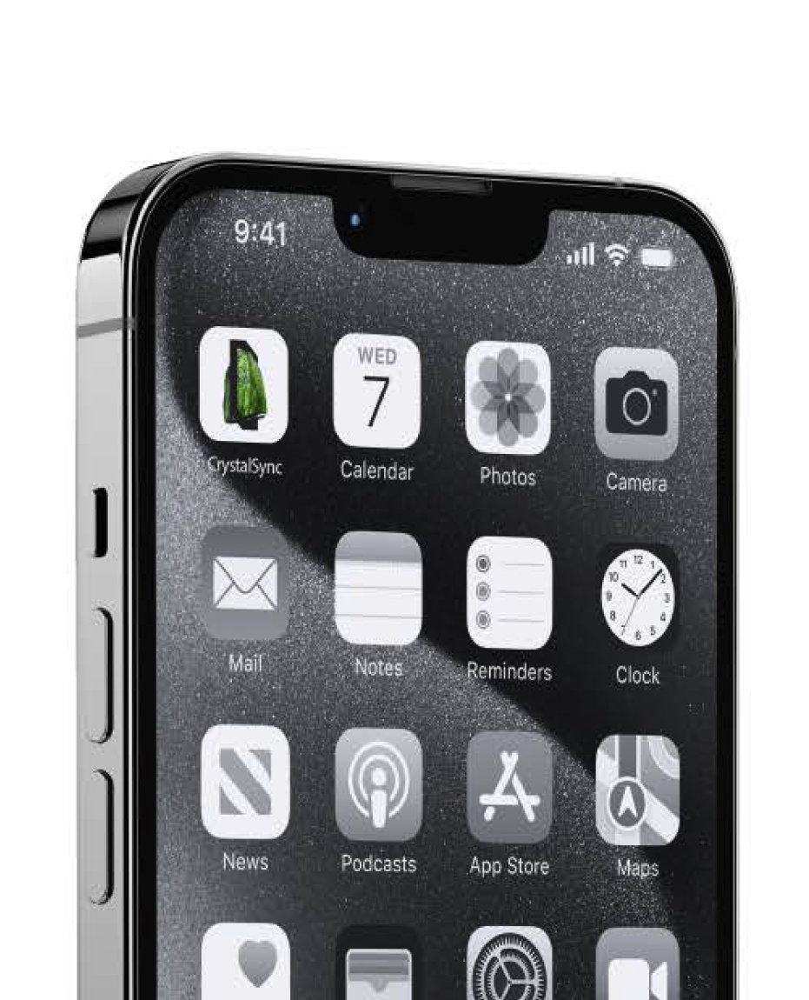
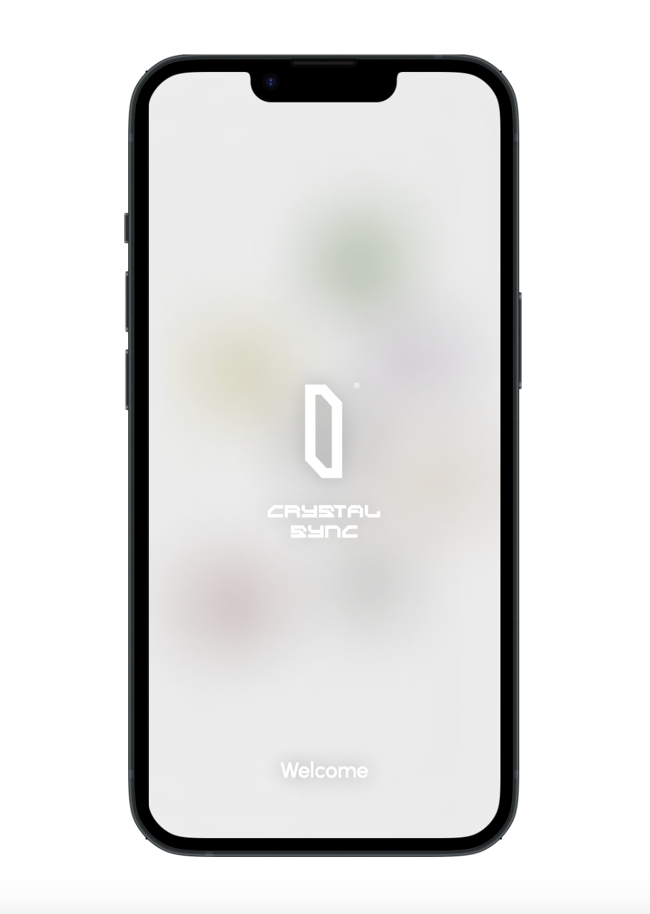

CRYSTAL SYNC DESIGN
BRAND

CRYSTAL SYNC
PROJECT
UX/UI DESIGN
BRIEF
APP PROTOTYPE
Scan a crystal!
After an in depht analysis of existing crystal apps I found out that there are currently no crystal apps on the market that can be personalized according to the needs and interests of the user. Most of them are focused on the scanning and recognition of crystals or they contain a crystal library.
This is how I came up with the concept for a mobile application that allows users to go on a personalized healing journey. During this 360 degree experience the user can interact with other crystal lovers and become part of a bigger crystal community with playlists, an inbuild lexika and forums.

